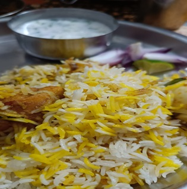
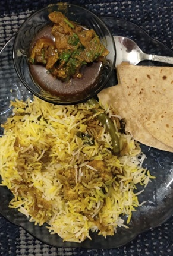
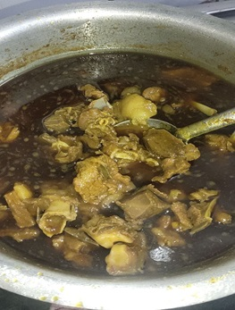
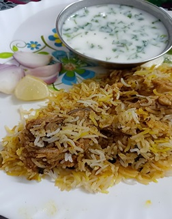

Chicken Dum Biryani
Aromatic, flavorful, and packed with spices, every bite of this Chicken Dum Biryani is a journey of taste and tradition. The tender, slow-cooked chicken is layered with perfectly spiced basmati rice to create a dish that’s irresistible. Served with complimentary buttermilk and fresh salad to complete your meal.
Chicken Masala
A rich, spicy, and hearty dish crafted with tender chicken pieces simmered in a flavorful, creamy gravy. Infused with aromatic spices, this Chicken Masala pairs perfectly with naan or steamed rice. A delightful choice for spice lovers!
Mutton Masala
Indulge in the bold and robust flavors of Mutton Masala, where succulent pieces of mutton are cooked to perfection in a thick, spiced gravy. The rich blend of traditional spices and tender meat promises a comforting and satisfying meal.
Mutton Biryani
Experience the royal taste of Mutton Biryani—juicy, tender pieces of mutton layered with fragrant basmati rice and cooked with a medley of spices. Perfect for special occasions or anytime you crave something extraordinary. Served with complimentary buttermilk and fresh salad for a complete dining experience.
